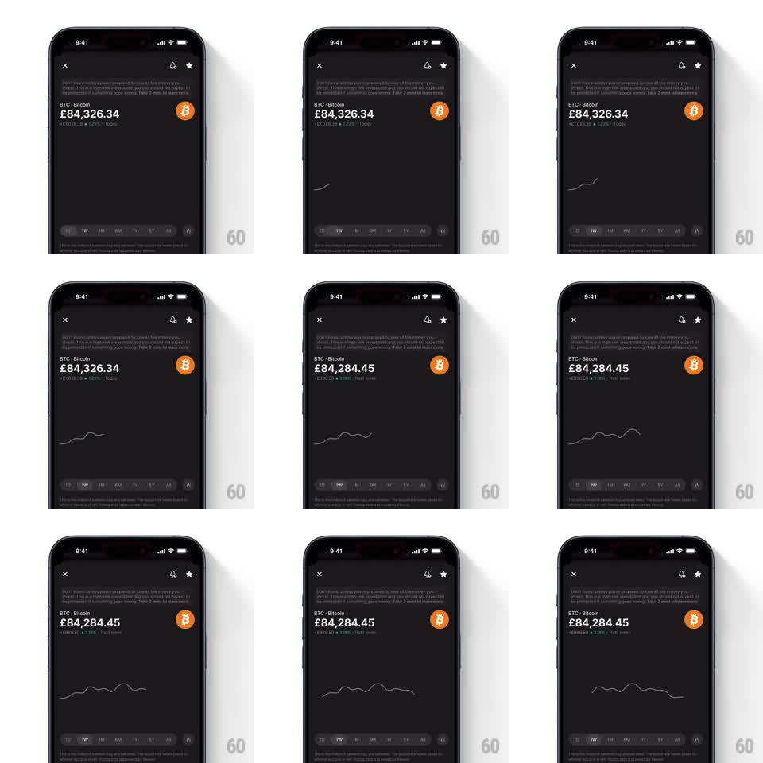

Media
Frame-by-frame

Rebuild this animation 1:1: Revolut's quiet chart load - the price line draws left to right as a thin neutral stroke, no glow, while the page around it is already still.

Rebuild this animation 1:1: Revolut's quiet chart load - the price line draws left to right as a thin neutral stroke, no glow, while the page around it is already still. ## Integration Integration: stack-agnostic spec - springs given as stiffness/damping, timed motions as duration + curve; map every value to your framework and animation library of choice. ## Scene Dark coin-detail screen: header, coin name + price figure + delta subline, chart area, timeframe tabs. Everything static except the line. ## Motion spec Pattern: plain left-to-right draw, ~2s. - The line strokes on left to right (stroke-dashoffset, 1.8s, linear with a slight ease at the tail) in a muted gray-green, 1.5px, no glow, no fill. - The draw head is invisible - the line simply grows. - On completion the delta subline and price figure refresh once (crossfade 200ms) to their final values. - Nothing else on the page moves. ## Calibration - Constant draw speed; the path's steep sections must not race - drive the dash offset by arc length, not by x. - Thin stays thin: no glow layer, no shadow, no fill. The restraint is the design. ## Reduced motion Chart fades in complete (250ms). ## Don't miss - Min/max labels sit inside the chart area in faint text and are present from the first frame - they don't draw with the line. - If this sits next to the glow variant in the same app, keep stroke color and weight distinct so the two loads never read as the same animation.